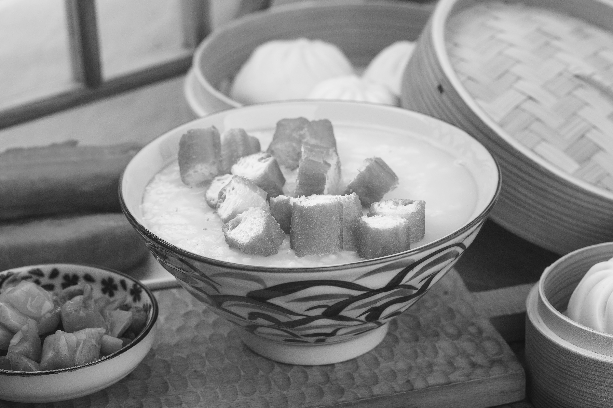
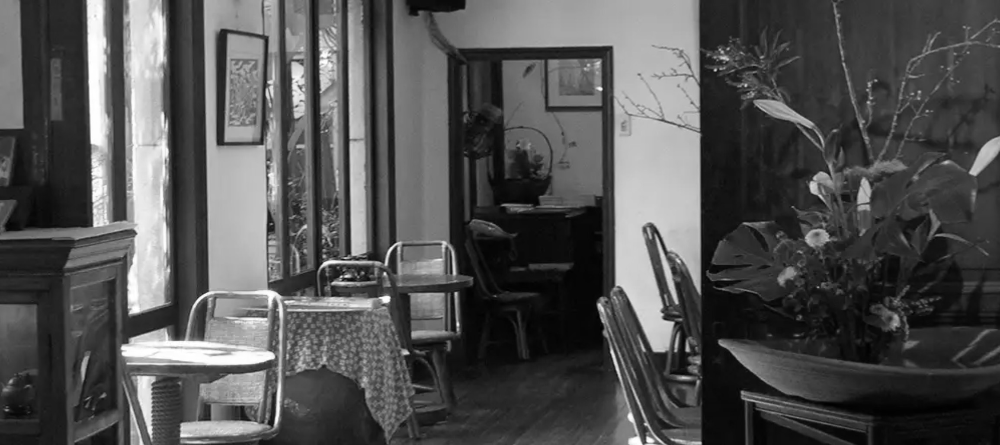

아침 조식早餐
중국은 문화혁명 이후로 ’가진 자‘들을 처단했는데 물론 이 가진 자들은 브루주아, 지식인, 구시대 귀족층 등을 가리키는 말이기도 했지만 의외로 남성도 포함되었다. 물론 꼭 이유가 이것 때문만은 아니지만 그래서인지 중화권 여성의 가사생활은 비중이 줄어들고 모두 공평하게 식사를 사먹는 문화가 발달했는데 이 덕분에 중국, 대만, 홍콩 등에 가면 아침-낮에 문을 열고 있는 조식 식당을 심심찮게 볼 수 있다. 파는 메뉴는 요우티아오油条(튀긴 빵), 또우장豆浆(두유), 지엔빙煎饼(전병)이 대표적인데 그것말고도 뤄보까오萝卜糕(무떡), 밥, 국수 등이 있다. 로컬 문화를 체험하고 싶은 사람이 있다면 중화권 여행지에 갈 때 꼭 이런 식당을 찾아가야한다. 미리 인터넷에서 찾거나 낮에 돌아다니면서 찾으면 편하지만 못 찾겠다면 숙소 프런트에 물어보면 된다.
나의 추천 메뉴는 말린 고기 가루인 로우송이 들어간 주먹박 판퇀과 같이 편의점에서 사온 차계란을 먹는 것이다. 또 설탕을 추가한 또우장에 요우티아오를 찍어먹는 건 한 번쯤은 시도 해볼 가치가 있는 일이다.
차관茶馆
차에 관심을 가지고 있는 사람이라면 차가 중국과 깊은 관련을 가지고 있다는 것을 알고 있을 것이다. 유래에 대해서는 여러가지 설이 있지만 내가 가장 재미있어 하는 설은 고대 신 신농이 사람들에게 이로운 풀과 해로운 풀을 가리기 위해 하나씩 입에 넣어보던 중 독초를 먹고 쓰러졌는데 그때 우연히 떨어진 찻잎을 먹고 해독되어 사람들에게 널리 알렸다는 전설이다. 아무튼 이러저러한 역사를 가지고 차는 중국에서 오래 복용되기 시작했는데 보통 디저트를 먹을 때나 차를 먹는 우리와는 달리 중화권 문화는 일상적으로 차를 마시고 차문화가 잘 발달되어 있다. 그러니, 차를 마셔야 한다.
대만은 우롱차와 밀향(꿀향)차 등등이 유명한 것 같다. 특히 아리산阿里山 지역에서 나는 차가 유명한데 중국의 운남성 차가 공기가 깨끗해서 좋은 차가 많이 생산된다는 이야기처럼 아리산도 비슷한 것 같다. 이런 차를 전문적인 찻집에 가서 다식과 함께 즐기는 것도 좋지만 조금 색다른 것을 원한다면 밥을 파는 찻집에 들어가도 좋을 것 같다. 중국 문화는 차를 일상적으로 마시기에 딤섬집에 항상 차가 있듯이 찻집에서도 밥을 팔기도 한다.
유명한 곳은 쯔텅루紫藤廬라는 차관이다. 쯔텅루는 밥이 맛있기로 유명한 찻집이다. 그렇다고 이 장소의 가치가 차와 밥에만 있느냐, 그것도 아니다. 쯔텅루는 원래 일본총독부 관사로 지어졌다가 이후 현지인의 자택으로 사용되었는데 2대 째에 들어 아들의 아이디어로 대만 최초의 찻집을 겸한 문화 살롱이 되었다. 하지만 쯔텅루의 변화는 여기에서 끝나지 않고 이후 민주화 운동 때 비밀 아지트로도 사용된 역사적으로 중요한 장소라던데 갔을 때 맛있는 차와 밥을 즐기면서 건물을 감상하면 참 좋을 것 같다.
훠궈火锅

요즘 한국에도 마라탕에 이어 훠궈 열풍이 찾아온 것 같다. 아름답다. 조금 더 인기가 많아져서 훠궈 집이 아파트 단지 수만큼 많아졌으면 좋겠는데….
우리가 많이 아는 빨간색의, 위협적으로 끓는 매운 훠궈는 중국의 쓰촨(사천)성에서 온 것이다. 그래서 훠궈는 모두 쓰촨에서 비롯되었다고 생각을 할 수 있는데 그것은 아니고 각 지역마다 특색 있는 훠궈가 있다. 고기 훠궈도 있고 버섯 훠궈도 있고 지역마다 이런저런 특색을 가진 훠궈가 있다.대만에도 그만의 특별한 훠궈가 있는데 첫번째는 오리 선지이고 두번째는 우유탕이다. 대만에서는 마라 훠궈를 주면 오리 선지를 푸짐하게 담아서 준다. 물론 선지는 호불호가 나뉘는 식재료라서 싫어하는 사람들이 많겠지만, 오리 선지는 정말 맛있다. 일부러 오리 선지를 먹기 위해 홍탕을 시키라고는 하지 않겠지만 혹시 오리 선지가 들어간 탕을 보면 한 번은 시도해보면 좋을 것 같다.
그리고 우유탕! 훠궈에는 탕 종류가 정말 많다. 보통은 홍탕, 백탕을 시키고 조금 더 맛잘알은 토마토탕을 시키겠지만 대만은 특이하게도 우유탕이 있다. 맛은 까르보나라같은 크림 맛? 매운 걸 잘 못 먹는 사람이라면 추천한다. 내장류를 넣어먹기에는 그닥 추천하지 않지만 하지만 두유피 튀김이나 어묵, 떡 같은 걸 넣어먹으면 누구나 좋아할 것 같다.
가장 이야기 하고 싶었던 것은 여기까지이다. 이 글을 읽어준 모두가 만약 대만 여행을 가면 잊지 말고 맛있는 음식을 많이 체험하고 왔으면 좋겠다는 바람을 담아 글을 마치겠다.